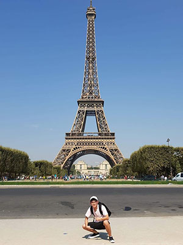

Details: Helped tidy up a nearby park as organized by the school.
Vietnam

Charity at Bac Giang Province – December 2015
Position: Participant and Fund Raiser
Details: A fund – raising program aimed to help handicapped children.
Charity at Hoa Binh Province – 2015
Position: Participant
Details: A charity aimed to donate clothes and provided school supplies for children in remote area.
Charity at Bui Chu Saint An's Orphanage – September 2013
Position: Participant
Details: A charity aimed to donate clothes and food for handicapped children.
Bữa Ăn Có Thịt (A Meaty Meal) – 2013
Position: Cook
Details: A charity that allowed students to cook a full meal for people with disadvantages who could not afford meat.
Charity for Thien Nhan - "The Steadfast Tin Soldier" – August 2013
Position: Participant and Fund Raiser
Details: A fund – raising charity aimed to help Thien Nhan restore his reproductive organ through a surgery.
Hành Trình Trái Tim Cho Em (A Heart for You) – 2013
Position: Participant and Fund Raiser
Details: A fund – raising charity aimed to assist children with inborn heart disease able to do a surgery.
Charity at SOS Children's Village – October 2012
Position: Participant and Fund Raiser
Details: A charity aimed to provide clothes and food to aid underprivileged children, and improved their living condition.
Hành Trình Trái Tim Cho Em (A Heart for You) – October 2010
Position: Participant and Fund Raiser
Details: A fund – raising charity aimed to assist children with inborn heart disease able to do a surgery.
These are the programs and charities that have helped me gained the experience needed
for working with people, developing my soft skills, expanding my network, building my confidence, and preparing me for whatever may come in the future.